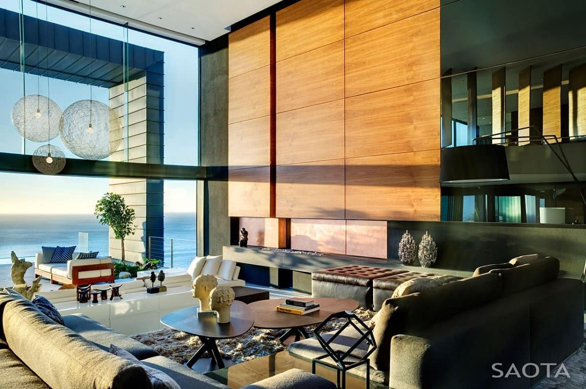

Цена на дизайн квартиры: что ее определяет ?
Заказать дизайн интерьера в Харькове сегодня не составит труда. Свои услуги предлагают как известные бюро, так и дизайнеры-фрилансеры. Вам решать, кому доверить преображение собственного жилища. Однако выбирая студию или дизайнера для сотрудничества, оцените стоимость их услуг. Мы лишь заметим, что лучше выбирать не те услуги, цена которых значительно ниже или намного выше средней по столичному рынку, а золотую средину. Подозрительно низкая стоимость разработки проекта может свидетельствовать об отсутствии опыта у дизайнера, а непомерно завышенная – не всегда гарантирует качество.
Давайте обсудим, как правильно расставить приоритеты и оптимизировать расходы, чтобы ваш интерьер не потерял главного – своей индивидуальности. Вопреки расхожему мнению, заказывать дизайн-проект у дизайн-бюро следует не только счастливым обладателям квартир и домов больших площадей. Собственники квартир в хрущевках ничуть не меньше нуждаются в помощи профессионалов. Ведь виртуозная перепланировка и уникальные оформительские решения смогут превратить и 42 кв.м. в шедевр дизайна.
В сущности, заказывая дизайн-проект, вы получаете очень подробный план ремонтных работ, базирующийся на точных расчетах, обмерах, чертежах; несколько вариантов планировочных решений и расстановки мебели; оформительские эскизы и пр. Как минимум, эти планы гарантируют вам существенную экономию времени.
Средняя цена на дизайн квартиры в Киеве колеблется от $40 до $50 за кв.м. Все чаше бюро предоставляют заказчикам возможность выбора наполнения пакета услуг от минимально необходимого, до самого полного.
Любой дизайн-проект – это, прежде всего, комплекс технической документации, который состоит из
обмерного плана, планов перепланировки, демонтажа и монтажа;
— планов пола и развёртки по стенам;
— схем дверных проёмов и коммуникаций;
— плана групп освещения, расположения розеток, мебели и сантехники;
— спецификаций оборудования.
Выбрав более полный дизайн-проект, заказчик получает также услугу 3D визуализации − самую красочную, но отнюдь не самую важную часть проекта. Очень востребована в последнее время услуга комплектации объекта и подбора материалов отделки, мебели, сантехники и пр. Ну а чтобы интерьер в точности соответствовал утвержденному проекту профильные специалисты дизайн-студии осуществляют авторский и технический надзор. Иными словами, полностью контролирую весь ход ремонтных работ и оформления интерьера.
Наш вывод однозначен – дизайн-проект нужен. Вложения в него вы обязательно компенсируете, получив тот интерьер, который и был задуман.